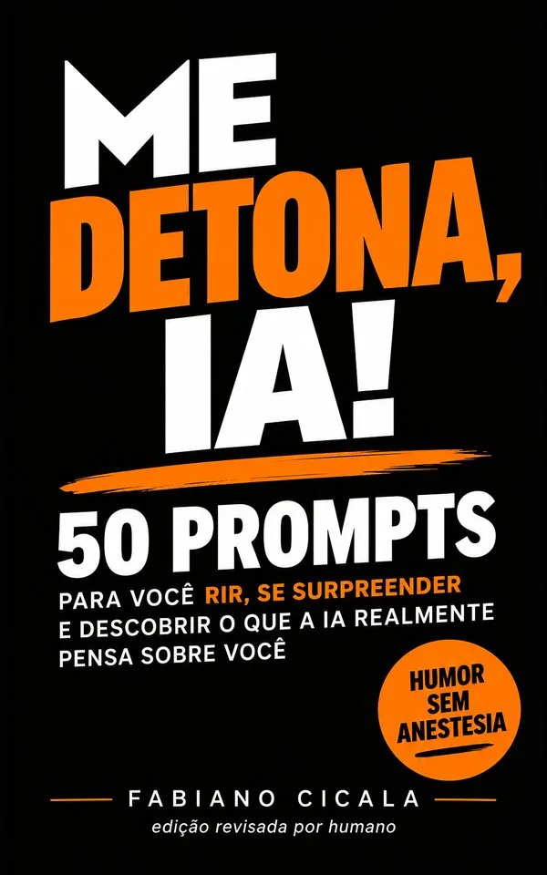
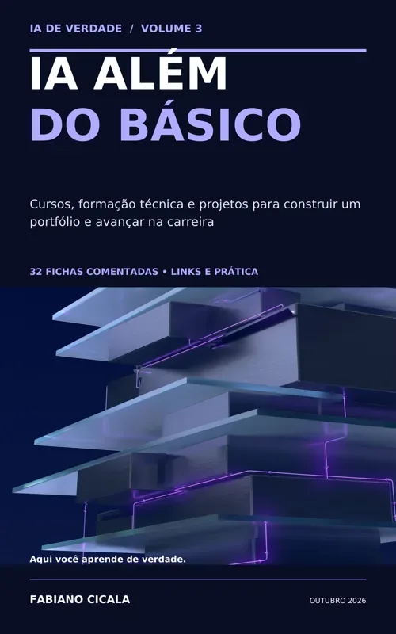

Empreendedorismo
A Estratégia do Invisível
Liderança, fé e propósito no comando silencioso.
Conhecer livro →Catálogo editorial
Histórias, reflexões e conhecimento sobre vida, negócios, fé, tecnologia e futuro.
17 obras e projetos editoriais
Liderança, fé e propósito no comando silencioso.
Conhecer livro →
Uma reflexão sobre excelência, inquietação e o que realmente importa.
Conhecer livro →
50 prompts para rir, se surpreender e explorar a inteligência artificial.
Conhecer livro →
Tecnologia, escolhas e o valor do ser humano.
Conhecer livro →
Uma história distópica sobre identidade e tecnologia.
Conhecer livro → Assistir ao teaser →
Um devocional sobre posicionamento, fé e perseverança.
Conhecer livro →


Introdução à inteligência artificial aplicada ao dia a dia.
Conhecer livro →
Aprofundando a aplicação prática da inteligência artificial.
Conhecer livro →
Uma visão organizada dos caminhos da inteligência artificial.
Conhecer livro →Perspectivas sobre o futuro e a atuação humana.
Conhecer livro →Experiências de empreendedorismo e construção de negócios.
Conhecer livro →
Aplicações da inteligência artificial ao trabalho.
Conhecer livro →Nenhum livro encontrado.